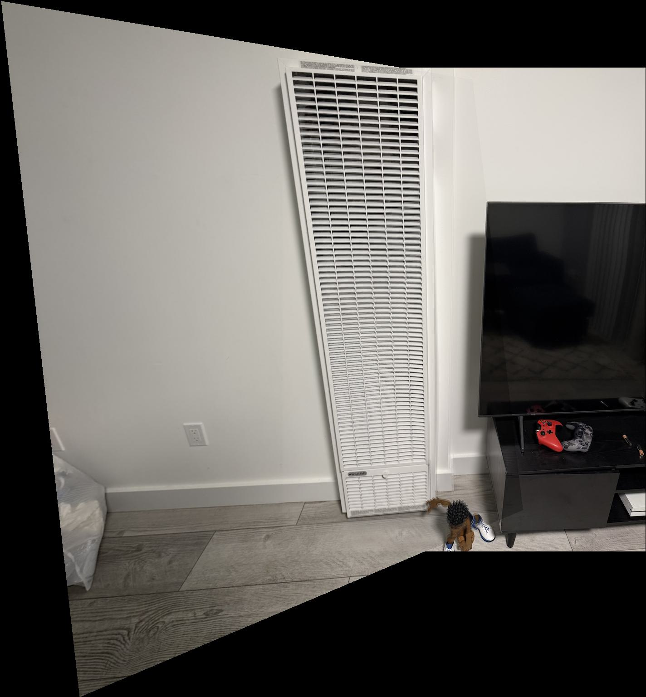
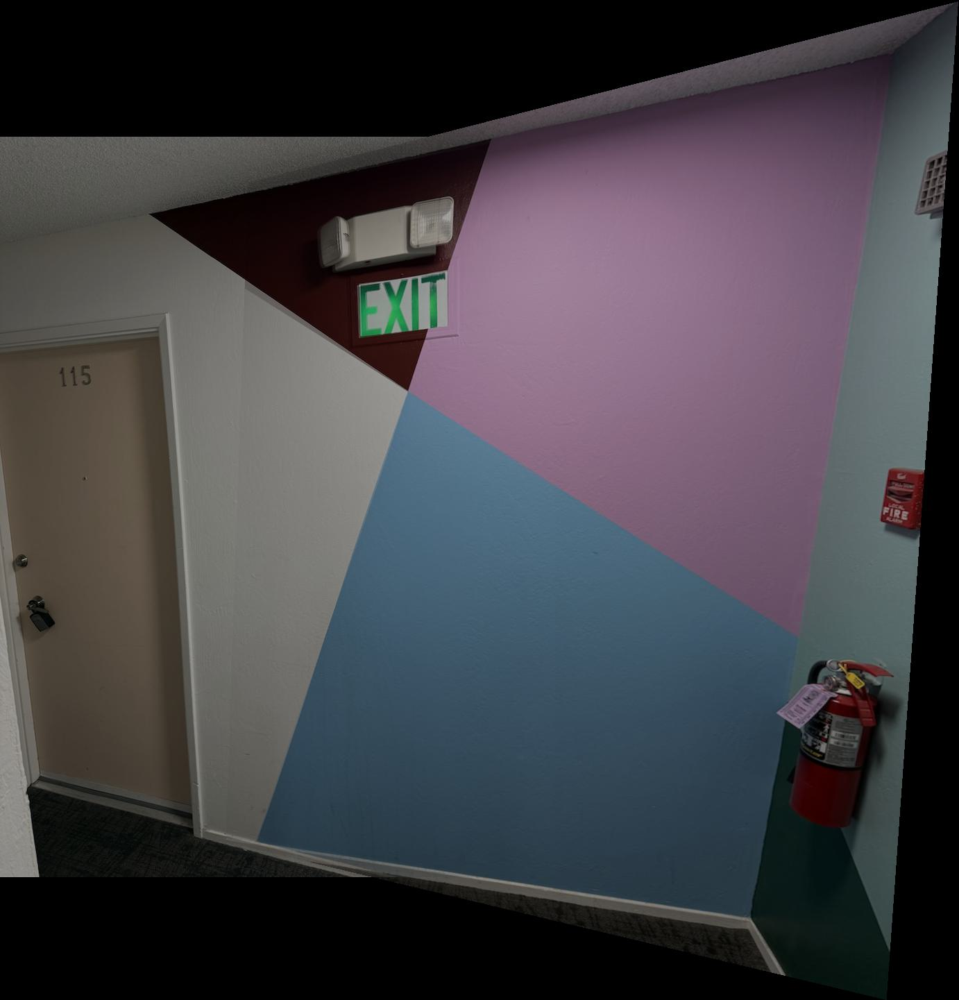
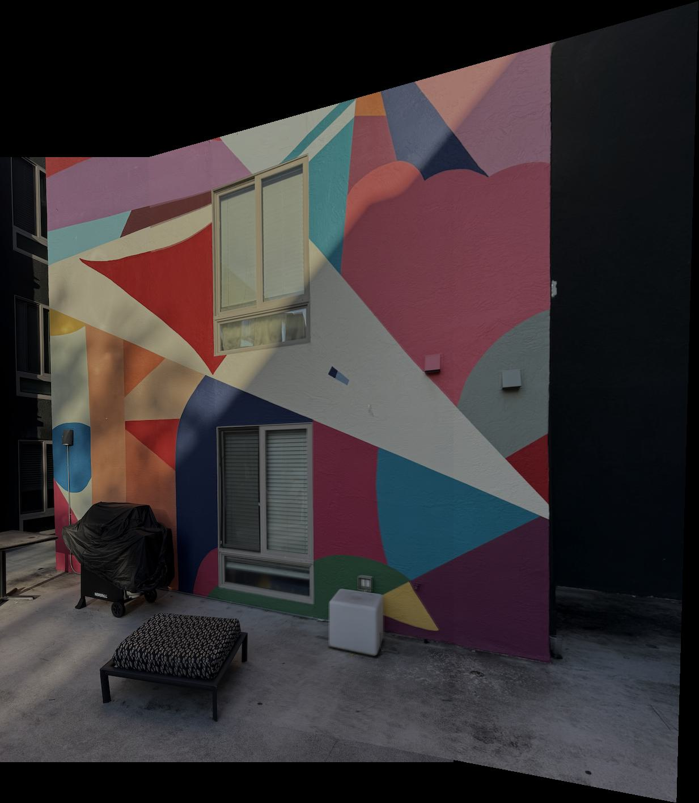

Overview
In this project, I implemented an image mosaic system that can automatically stitch multiple photographs together to create panoramic images. The core technique involves computing homographies (projective transformations) between images taken from the same center of projection with different camera orientations.
The pipeline consists of four main stages: (1) capturing or selecting appropriate images with sufficient overlap, (2) recovering homography matrices from corresponding point pairs between images, (3) warping images using the computed homographies with both nearest neighbor and bilinear interpolation, and (4) blending the warped images together using weighted averaging to create seamless mosaics. The project demonstrates fundamental concepts in computer vision including projective geometry, image warping, and multi-image blending.
A.1: Shoot the Pictures
For this project, I captured multiple sets of photographs with projective transformations between them. The key requirement is to keep the center of projection (COP) fixed while rotating the camera to capture different views. This ensures that the transformations between images are pure homographies.
Image Set Requirements
- Center of Projection: Camera rotates around a fixed point (optical center)
- Overlap: 40-70% overlap between consecutive images for reliable registration
- Timing: Images captured close together to minimize lighting changes and subject movement
- Lens Considerations: Avoiding fisheye lenses or significant barrel distortion
Captured Image Sets
Set 1: TV Mosaic
This set consists of two images of a TV screen captured by rotating the camera around its center of projection. The images have significant overlap and contain sufficient texture for point correspondence.
Image 1
Image 2 (Reference)
Set 2: Interior Scene
This set captures an interior scene with the camera rotating around a fixed center of projection. The images contain rich texture and detail for reliable point correspondence.
Image 1
Image 2 (Reference)
Set 3: Facade Mosaic
This set captures a building facade with the camera rotating around a fixed center of projection. The images demonstrate projective transformation between views of architectural features.
Image 1
Image 2 (Reference)
A.2: Recover Homographies
A homography is a projective transformation represented by a 3×3 matrix H that maps points from one image to another: p' = Hp. Since the matrix has 8 degrees of freedom (9 elements minus 1 for scale), we need at least 4 point correspondences to solve for H. However, using more than 4 points and solving via least-squares provides more robust results.
Implementation: computeH(im1_pts, im2_pts)
Given n pairs of corresponding points (x, y) in image 1 and (x', y') in image 2, I set up a system of linear equations. For each point correspondence, the homography relationship gives us:
Rearranging to eliminate the denominator and setting h33 = 1, we get two equations per point correspondence:
This forms a system Ah = b where A is a 2n × 8 matrix, h is a vector of the 8 unknown homography parameters, and b is a 2n vector of target coordinates. I used 8 point correspondences for each image pair, creating a 16 × 8 overdetermined system. The solution is computed using numpy's least-squares solver (lstsq), which minimizes ||Ah - b||2. The resulting 8 parameters are then reshaped into a 3×3 homography matrix with h33 = 1.
Point Correspondences
I manually selected 8 corresponding points between image pairs using matplotlib's ginput function for interactive point selection. Each point was carefully chosen on distinctive features visible in both images. Careful selection is crucial as small errors in point correspondences can significantly affect the recovered homography. The points are visualized with matching colors and numbers across both images.
Corresponding Points Marked on Images
Recovered Homography Matrix
The computed homography matrix H transforms points from the source image to the reference image coordinate system. Here's an example recovered homography:
A.3: Warp the Images
Once we have the homography matrix H, I implemented image warping using inverse warping to avoid holes in the output. The algorithm first computes the output image dimensions by transforming the four corners of the source image through H to find the bounding box. Then, for each pixel in the output image, I compute H-1 to map the output coordinates back to source image coordinates and sample the source. The warped images include an alpha channel to track valid pixels.
Interpolation Methods
Since the inverse-mapped coordinates are typically not integers, I implemented two interpolation methods from scratch:
- Nearest Neighbor: For each output pixel, I round the source coordinates to the nearest integer using standard rounding, then clamp to image boundaries to handle edge cases. This is fast (single pixel lookup) but produces blocky artifacts, especially along edges.
- Bilinear Interpolation: For each output pixel, I compute the floor of source coordinates to get the top-left neighbor (x1, y1), then use the four surrounding pixels (x1, y1), (x2, y1), (x1, y2), (x2, y2). The interpolation weights are wx = x_src - x1 and wy = y_src - y1, and the final value is: (1-wx)(1-wy)×p11 + wx(1-wy)×p21 + (1-wx)wy×p12 + wx×wy×p22. This produces smoother results at the cost of 4 pixel lookups and floating-point arithmetic per output pixel.
Rectification
To test the homography and warping implementation, I performed rectification on two different images. For each, I manually selected 4 corner points of a rectangular object in the image, then computed a homography mapping those points to a 200×200 square. This effectively "straightens" the perspective-distorted rectangles.
Example 1: Rectangular Panel
Original Image (Perspective View)
Rectified - Nearest Neighbor
Rectified - Bilinear Interpolation
Example 2: Additional Rectification
Original Image (Perspective View)
Rectified - Nearest Neighbor
Rectified - Bilinear Interpolation
Comparison and Discussion
Quality: Bilinear interpolation produces noticeably smoother results, especially visible along edges and in regions with fine detail. Nearest neighbor interpolation creates a "blocky" or pixelated appearance due to discrete rounding.
Speed: Nearest neighbor is significantly faster as it only requires rounding and a single pixel lookup. Bilinear interpolation requires four pixel lookups and floating-point arithmetic for weighted averaging.
Trade-off: For final high-quality results, bilinear interpolation is preferred. For real-time applications or quick previews, nearest neighbor may be acceptable.
A.4: Blend the Images into a Mosaic
The final step is to combine multiple warped images into a seamless mosaic. Simply overlaying images creates harsh edges and discontinuities. Instead, I use weighted averaging (feathering) where the contribution of each image gradually decreases toward its edges.
Blending Strategy
My implementation uses a global canvas approach with Gaussian-weighted alpha blending:
- Compute Global Bounding Box: Transform the corners of the first image through the homography H, then combine with the corners of the reference image (which remains unwarped) to determine the minimum and maximum x, y coordinates. This defines the mosaic canvas size.
- Create Gaussian Alpha Masks: For each image, I generate an alpha mask with Gaussian falloff from the center. The mask is computed as α = exp(-d²/(2σ²)) where d is the distance from the image center and σ = min(height, width)/4. This creates smooth weight transitions that are 1.0 at the center and approach 0.0 at edges.
- Place Reference Image: The second image (reference) is placed directly onto the global canvas at its natural position (accounting for any negative offsets in the bounding box), multiplied by its alpha mask.
- Warp and Place First Image: The first image is warped using bilinear interpolation to align with the reference frame. The warped image has its own Gaussian alpha mask that is further multiplied by the binary alpha channel (indicating valid pixels). This weighted image is then added to the canvas.
- Normalize by Total Alpha: Throughout the process, I accumulate the total alpha weights. The final mosaic is computed as: mosaic = Σ(image_i × α_i) / Σ(α_i), ensuring proper weighted averaging in overlap regions.
- Post-processing: A small Gaussian blur (σ=0.5, kernel size 3×3) is applied to further smooth any remaining artifacts at blend boundaries.
Mosaic Results
Mosaic 1: TV Screen Panorama
This mosaic combines two images of a TV screen captured by rotating the camera. The images were warped using computed homographies and blended using distance-weighted averaging.
Source Image 1
Source Image 2 (Reference)
Image 1 Warped to Reference Frame
Final Blended Mosaic
Mosaic 1: Processing Array
This visualization shows the step-by-step process of creating the mosaic, including intermediate warping stages and the blending process.
Mosaic 2: Interior Scene Panorama
This mosaic combines two images of an interior scene, demonstrating the algorithm's ability to handle complex textures and varying lighting conditions.
Source Image 1
Source Image 2 (Reference)
Image 1 Warped to Reference Frame
Final Blended Mosaic
Mosaic 2: Processing Array
Step-by-step visualization of the interior scene mosaic creation process.
Mosaic 3: Facade Panorama
This mosaic stitches together images of a building facade, demonstrating the algorithm's ability to handle architectural features with strong geometric patterns.
Source Image 1
Source Image 2 (Reference)
Image 1 Warped to Reference Frame

Final Blended Mosaic
Mosaic 3: Processing Array
Step-by-step visualization of the facade mosaic creation process.
Blending Implementation Details
The key to seamless mosaics is the Gaussian alpha mask strategy. By using exponential falloff (Gaussian) rather than linear, the blending appears more natural because the weight transitions follow a smooth, continuous curve. The choice of σ = min(height, width)/4 ensures the mask has significant influence across the entire image while maintaining the strongest weights at the center.
The weighted averaging approach (dividing by total accumulated alpha) is crucial in overlap regions. Without this normalization, overlap areas would be brighter than non-overlap regions. The division ensures that regardless of how many images contribute to a pixel, the final intensity is correctly averaged.
The final Gaussian blur pass helps eliminate any subtle discontinuities at blend boundaries. Using a small kernel (3×3 with σ=0.5) provides just enough smoothing without noticeably degrading image sharpness. For scenes with more challenging lighting variations or more complex blending scenarios, Laplacian pyramid blending could be employed to separately handle low and high-frequency components.
Key Insights and Conclusions
- Point Correspondence is Critical: Small errors in manually selected point correspondences can lead to significant misalignment. Using more than the minimum 4 points and least-squares fitting improves robustness.
- Interpolation Quality Matters: Bilinear interpolation is essential for professional-looking results. The smoothness it provides is especially noticeable in the final mosaic, though it comes at a computational cost.
- Blending Eliminates Seams: Weighted averaging with proper alpha masks is crucial for seamless mosaics. Simple overlaying creates harsh boundaries that are immediately noticeable.
- Projective Geometry Limitations: This approach works well for rotations around the camera center but would fail for scenes with significant parallax or for wide-angle mosaics exceeding 180 degrees (which require cylindrical or spherical projection).
- Practical Considerations: Capturing good source images (proper overlap, consistent lighting, minimal motion) is just as important as the algorithmic implementation. The quality of the final mosaic is bounded by the quality of the input images.
What I Learned
This project provided hands-on experience with fundamental computer vision concepts. I gained deep understanding of projective transformations and how they relate to camera geometry. Implementing both forward and inverse warping clarified why inverse warping is necessary to avoid holes.
The interpolation comparison made the trade-offs between speed and quality concrete. Most importantly, I learned that successful image mosaicing requires careful attention to every stage of the pipeline - from image capture to point selection to blending strategy. Each component contributes to the final result, and weaknesses in any stage can compromise the entire mosaic.